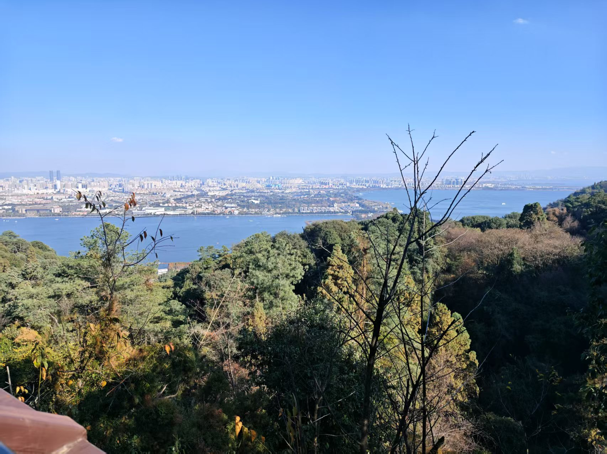
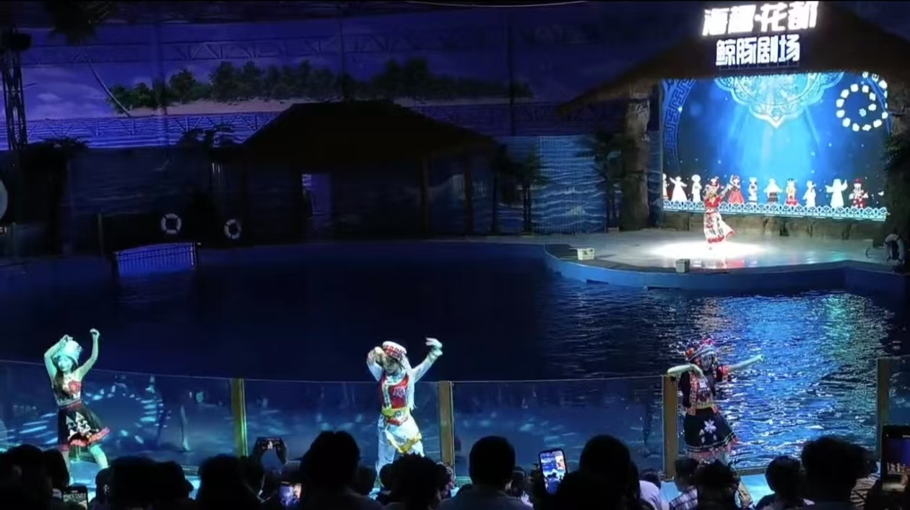
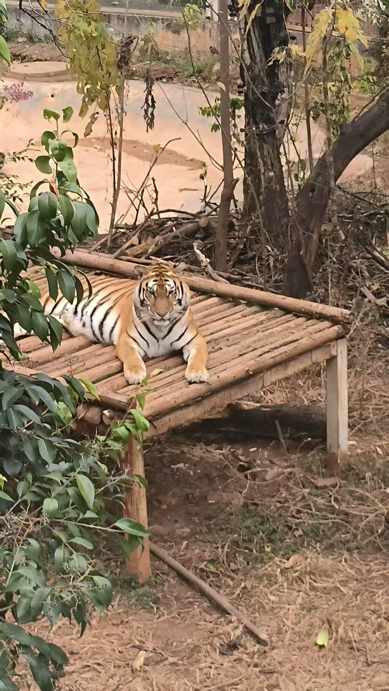

春城昆明游记
"天气常如二三月，花枝不断四时春" - 2025年冬日的昆明之旅
✈️ 行程概览
2025年1月，我和女朋友踏上了向往已久的昆明之旅。作为"春城"的昆明，气温也降到了10℃左右，即使寒冷的冬天也没有让我们停止步伐。我们的行程安排：
五日行程精华
- Day 1：抵达昆明→入住翠湖附近民宿→品尝过桥米线
- Day 2：西山龙门→滇池海埂大坝
- Day 3：七彩云南欢乐世界
- Day 4：昆明动物园→翠湖公园
- Day 5：云南民族村→返程
⛰️ 西山龙门 - 俯瞰滇池的绝佳位置
西山被称为"滇中第一佳境"，我们选择清晨登山避开人流，一大早就背着装备准备爬山。登山路线：
- 乘坐缆车到达半山腰
- 徒步攀登"龙门石窟"段（约2小时）
- 登顶凌虚阁（海拔2350米）
滇池风光
站在龙门之巅俯瞰滇池，水面如镜，天光云影共徘徊。最有趣的是摸龙门石窟的"龙门"石雕祈福，据说能带来好运。

🎢 七彩云南欢乐世界 - 梦幻主题乐园

这个以云南少数民族文化为主题的大型乐园，将自然景观与游乐设施完美结合。必玩项目：
- 滇池之眼摩天轮：高达108米，可俯瞰整个滇池
- 雪鹰宽翼过山车：云南最长的悬挂式过山车
- 鲸豚剧场：观看海豚与驯养员的精彩表演
实用贴士
建议提前在官网购票并下载园区APP，可实时查看排队情况。园区内餐饮价格较高，可自带少量零食。
🐘 昆明动物园 - 遇见各种动物
始建于1953年的老牌动物园，以丰富的云南本土动物为特色。园内分为：
- 亚洲象馆（必看西双版纳象群，不过我们去的时候没看到）
- 灵长类动物区
- 虎园和狮园（有几只大老虎和几只幼崽）
- 黑熊馆（很多黑熊）
- 孔雀园（可近距离接触）
- 樱花大道（春季最佳，因为我们冬天去的时候已经没有樱花了）

📝 昆明旅行建议
最佳季节
据我们的经验以及网上总结：3-5月（赏花季）或10-11月（秋高气爽），避开7-8月雨季高峰
必尝美食
- 过桥米线：推荐"建新园"老字号
- 汽锅鸡：用特制汽锅蒸制，汤清味鲜
- 鲜花饼：嘉华饼屋的现烤玫瑰饼最佳
- 野生菌火锅：7-9月雨季新鲜上市
交通提示
长水机场有地铁6号线直达市区；市内景点可乘公交或共享单车；去周边景区建议包车一日游